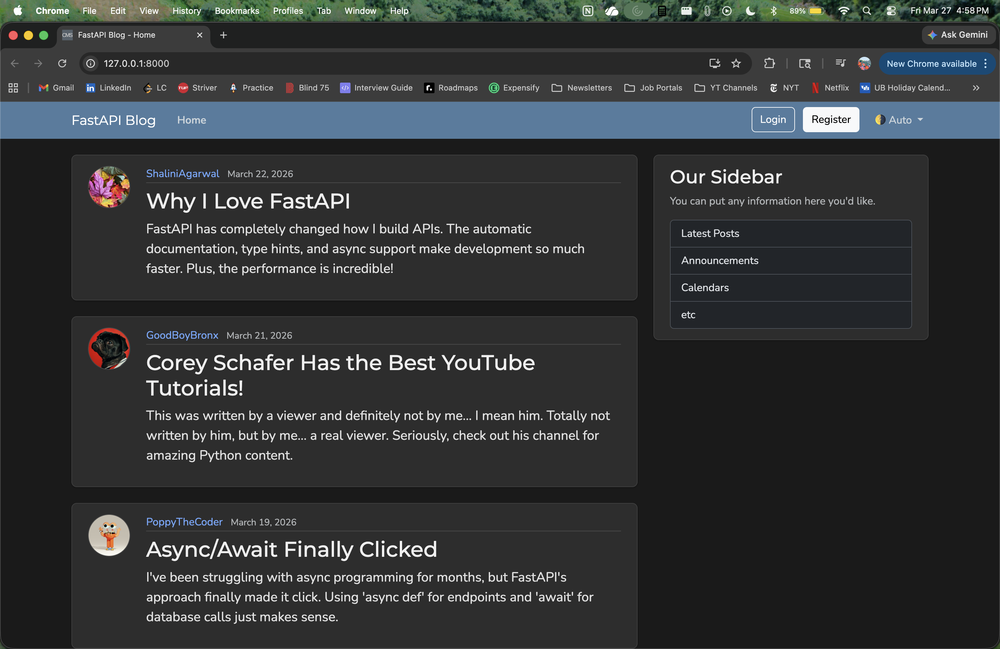
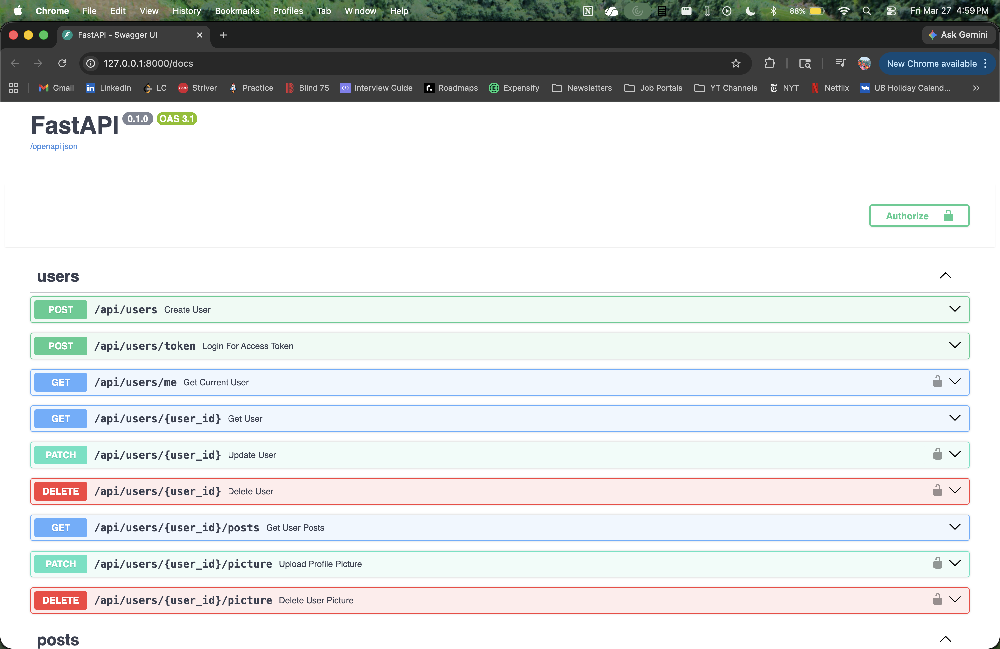
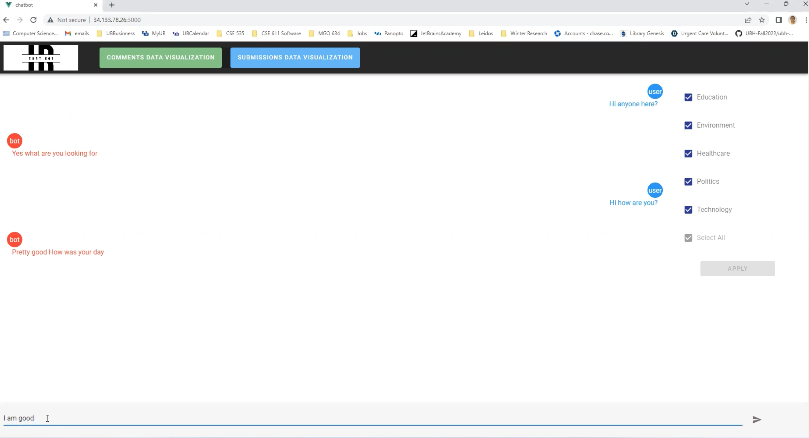
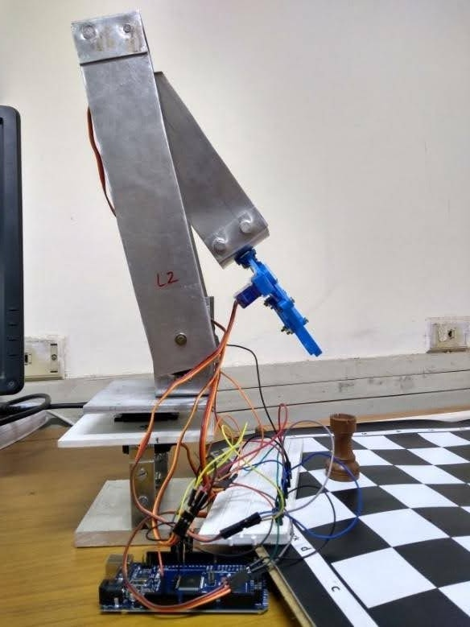

Work Experience
Research Software Engineer at RF SUNY
June 2024 - February 2026
Worked at the CADL lab (Communicative Assistive Device Laboratory) to develop assistive technologies for AAC (Augmentative & Assistive Communication) device users.
- Built a production-grade real-time conversational backend using FastAPI and WebSockets, cutting LLM response latency by 50% through prompt engineering, RAG strategies, and pipeline optimizations.
- Engineered a resilient system capable of handling 8+ runtime failure modes with schema validation, retries, and memory pipelines that preserved conversational context across 20 turns per session.
- Expanded observability with Prometheus & Grafana, reducing metric noise by 30% and enabling end-to-end visibility into system performance and conversation history.
Senior Software Engineer at Wipro Technologies
Junly 2019 - August 2022
Worked in the Health IP & Innovations Team developing PoCs for clients in the health care industry.
- Built a cloud-enabled Power BI analytics platform for clinical trial decision-making, integrating 5,900+ records from 4 public databases into a 7-screen dashboard with 15+ visualizations per screen.
- Engineered AI-powered healthcare tools including an ICD-10AM medical coding system achieving 80% diagnostic accuracy on 2,000+ EHRs, and an OCR-based chart indexing tool that processed 100,000+ files with a 50% reduction in processing time.
- Developed 3 Alexa-powered voice assistants for lab scientists, deployed on AWS Lambda with DynamoDB integration, covering inventory management, safety guidance, and experiment knowledge.
Software Engineer Intern at Yahoo
May 2023 - June 2023
Worked in the Content Management System team responsible for ingesting and processing content for all Yahoo properties such as News, Finance, Sports etc.
- Developed an article display time feature across all Yahoo properties, enhancing SEO and enriching internal CMS editorial capabilities
- Utilized Docker, Screwdriver CI/CD & unit testing with Pytest to deploy the feature ensuring reliable testing, deployment, and maintainability
Research Assistant at RF SUNY
January 2023 - December 2023
Worked in Dr. Rohini Srihari's research group - 'Conversational AI for Social Good' discussing latest research work in NLP and was also part of an NSF-funded project carried out in collaboration with 3 US universities.
- Architected an NLP-based conversational AI chatbot for an NSF-funded project combating disinformation among senior citizens, using Rasa and AWS EC2 & S3 services
- Integrated LLM from Hugging Face into Rasa to enable neural response generation, advancing research in NLP & conversational AI for social good
Teaching Assistant at University at Buffalo - Department of Computer Science and Engineering
January 2023 - December 2023
Worked as a Grader for two courses in Spring and Fall of 2023 - NLP & Text Mining & Information Retrieval respectively.
- Mentored two graduate classes of 65+ & 80+ students for courses Information Retrieval and NLP & Text Mining resp
- Guided students on projects, supervised grading activities, and facilitated in course management & organization
Projects
FastAPI Blogging Website
- Built a full‑stack blog application with FastAPI, serving both RESTful JSON APIs and server‑rendered HTML pages using Jinja2.
- Implemented an async CRUD backend with SQLAlchemy and Pydantic, focusing on validation, clean architecture, and modular routing.
- Added JWT‑based authentication and authorization, enforcing protected routes and ownership checks, with frontend interactions handled via JavaScript and Fetch API.


Information retrieval (IR) chatbot
- Built an end-to-end IR chatbot with conversational capabilities, leveraging Reddit data scraped via the Pushshift API, indexed and ranked in Apache Solr using BM25 similarity.
- Delivered a full-stack web application with a Vue.js frontend, Flask/Python backend, and deployed it on GCP, demonstrating end-to-end ownership from data engineering to production hosting.

Chess Playing Robot
- Engineered a 4-DOF chess-playing robotic arm in PTC Creo, applying inverse kinematics and computer vision to execute autonomous pick-and-place operations via a custom piece recognition algorithm.
- Developed the full hardware-software integration — designing arm links, gripper, and base mechanical components while programming end-to-end control logic using MATLAB, Arduino, and C++.

Volunteer Experience
Teacher & Content Writer at Har Hath Kalam
2015 - 2019
Provided teaching and content writing services to underpriviledged slum kids near my University campus.